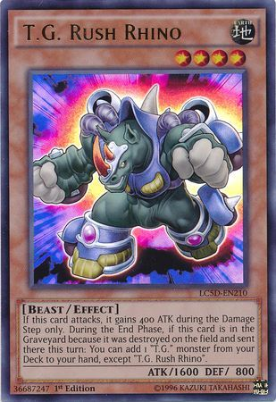
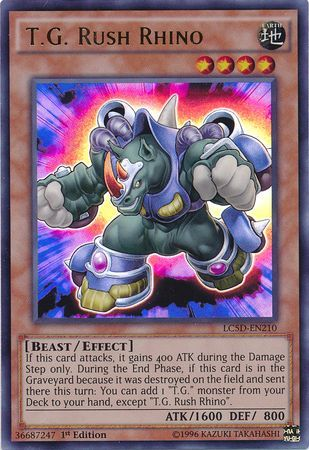
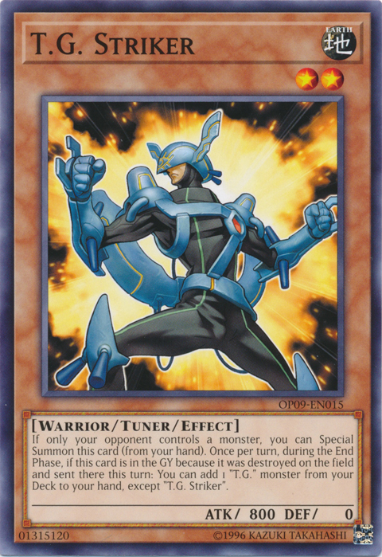
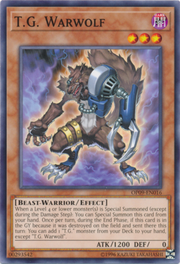
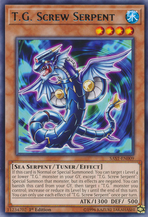
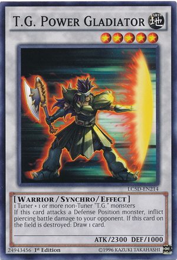

The T.G. monsters are designed to help you Synchro Summon the best Synchro Monsters with speed and efficiency, by special summon when condition are mets, change level, search the monster to your hand, etc. Here are some example
T.G. combo that you want to know.
Some of T.G. monster can search other "T.G." monster from the deck to your hand when it destroyed and sent to the graveyard, so you can don't worry if there are running out of monster you control in first starting hand. First you
need to synchro summon "T.G." 5 stars monster in order to prepare your field for another combo, defense or counter attack. There are many way you can start, this is the example how to start.
 

Normal Summon T.G. Cyber Magician from your hand. T.G. Cyber Magician can let you synchro summon using "T.G." non-Tuner monster from your hand. And then using them synchro summon Level 5 T.G. Wonder Magician. T.G. Wonder Magician
effect is destroy any Spell or Trap on the field when it summoned, and you can draw a card when it destroyed. She's a Tuner, and she has effect that you can synchro summon in opponent turn, so you can synchro summon to powerful
synchro monster in opponent turn.



When your opponent has a monster but you don't, you can special summon T.G. Striker from your hand, and then Normal Summon T.G. Warwolf. Using them to synchro summon Level 5 T.G. Power Gladiator. T.G. Power Gladiator can inflict
battle damage to defense position monster. And if it destroyed from the field, you can draw a card to help you increase card from your hand to do the combo next turn.


Normal Summon T.G. Screw Serpent and using T.G. Booster Raptor's effect special summon it from your hand when there are T.G. monster on the field, and then synchro summon Level 5 T.G. Star Guardian. T.G. Star Guardian has an effect
to let you add T.G. card from graveyard to your hand, and special summon T.G. monster from your hand. Choose T.G. Screw Serpent to your hand and the special summon it to let the T.G. Screw Serpent effect activate. Its skill
is special summon T.G. monster from the graveyard so you can do the synchro summon one more. This combo can use Accel Synchro in 1 turn so i recommanded to use this combo.

Normal Summon T.G. Catapult Dragon, and the use its skill to special summon T.G. Jet Falcon from your hand. Using them synchro summon Level 5 T.G. Hyper Librarian. T.G. Hyper Librarian's effect can draw a card when opponent performing
synchro summon.
You can try these combo in variable way that you like, and you can try the recommanded card from the right to try a new combo. For the safety when the opponent has a card that prevent your combo, you can try to put some Spell/Trap
card that can prevent that situation like Hey, Trunade!, Cosmic Cyclone, Mystical Space Typhoon, etc.
Accel Synchro and Delta Accel Synchro

We need 1 Tuner Synchro Monster and 1 or more non-Tuner Synchro Monster to do Accel Synchro. After try the variable way to let you have all of them, You can Accel Synchro to T.G. Blade Blaster or the other Accel Synchro Monster.
But if you choose "T.G." Accel Synchro Monster, you can do a Delta Accel Synchro by this next combo.

We need 1 Tuner Synchro Monster and 2 or more non-Tuner Synchro Monster to do Delta Accel Synchro. There are another combo that you already Accel Synchro Summon T.G. monster. That's you need to synchro summon T.G. Recipro Dragonfly
using 1 star Tuner monster, and 1 star non-Tuner monster. Its skill is you can return your T.G. Accel Synchro Monster to extra deck to special summon the synchro monster that you used to Accel Synchro and then you finally can
perform Delta Accel Synchro Summon. You can even performing Accel Synchro or Delta Accel Synchro in your opponent's turn.
T.G. Halberd Cannon Assault Mode

In order to use another mode of T.G. Halberd Cannon, "Assault Mode", you need a trap card "Assault Mode Activate" or spell card "Assault Mode Zero" that let you special summon T.G. Halberd Cannon/Assault Mode from the deck or hand.
This mode has power more than the previous form in every way. If it destroyed from field, you can special summon it previous form ignoring summon condition.
Recommanded non T.G. Card
This card helps you to summon level 1 card from your hand or deck that you made a combo to synchro more easily.
This card can help you search Booster Raptor to make it special summon from your hand and synchro with it.
Assault Blackwing - Onimaru the Divine Thunder
This card is overpowered when it synchro summoned by using only Synchro Monster, and T.G. deck can synchro summon many times.